A SP Agro integra produção, beneficiamento, controle de qualidade e tecnologia para entregar sementes de pastagem com segurança, eficiência e resultado.Sementes de pastagem com fabricação própria, controle de qualidade e tecnologia aplicada.
A SP Agro Sementes é uma empresa do agronegócio especializada em soluções para formação e manejo de pastagens, integrando tecnologia, controle de qualidade, eficiência produtiva e conhecimento técnico para entregar sementes com alto padrão de desempenho.
Com fábrica e operações industriais no estado de São Paulo, a empresa conta com uma estrutura preparada para atender às demandas do mercado agropecuário, acompanhando a evolução do setor e o crescimento das novas fronteiras agrícolas e pecuárias do país.
Da seleção criteriosa ao beneficiamento, controle e preparação das sementes, cada etapa do processo produtivo é conduzida com responsabilidade, precisão e rigor técnico.
A SP Agro trabalha para oferecer ao produtor rural mais segurança, produtividade e confiança, transformando sementes de qualidade em oportunidades de crescimento sustentável no campo.
Seja um revendedor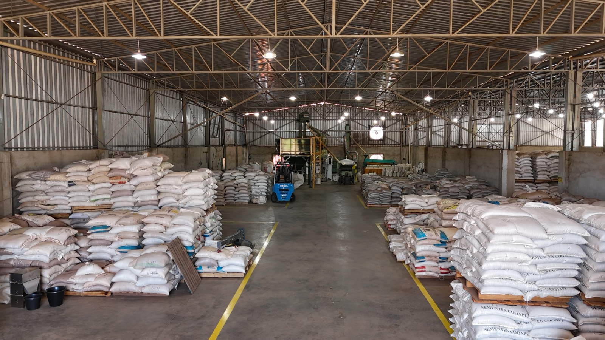
Da chegada da matéria-prima à expedição, cada etapa acontece sob controle — tecnologia, equipamentos modernos e equipe qualificada para garantir alto padrão de qualidade e pureza.
Fábrica própria no estado de São Paulo — Neves Paulista/SP — com logística própria e frota de caminhões para coleta e entrega de sementes, além de atendimento técnico consultivo ao produtor.
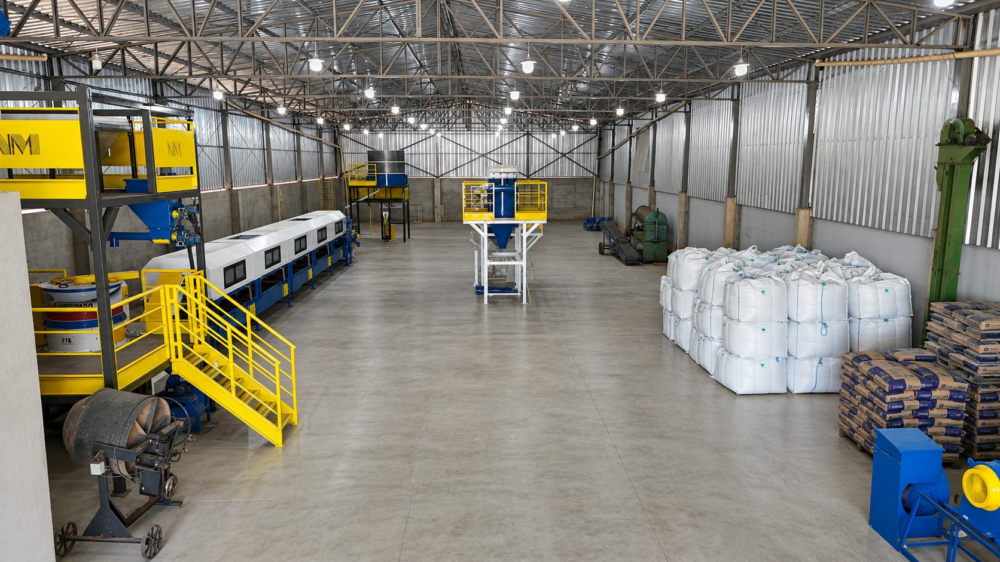
Escolha dos melhores lotes de sementes.
Testes de pureza e germinação.
Limpeza, padronização e tratamento do lote.
Certificação final dos padrões mínimos de pureza, germinação e PMS.
Envase com rastreabilidade.
Envio direto ao produtor e ao revendedor.
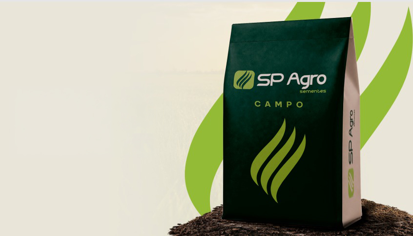
Linha de sementes em palha.
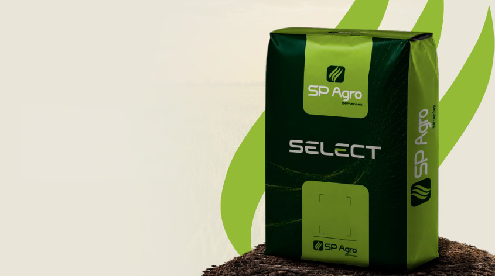
Linha de sementes tratadas e revestidas.
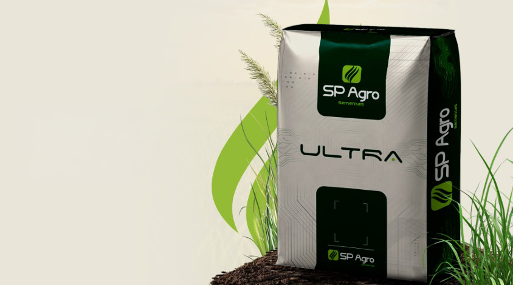
Linha de sementes tratadas e revestidas.
Clique em uma cultivar para ver a ficha técnica completa.
Fichas técnicas completas: capim Marandu · Mombaça · Xaraés · Piatã · Ruziziensis · Decumbens · Massai
Fábrica em Neves Paulista/SP, com logística própria e atendimento direto ao produtor.
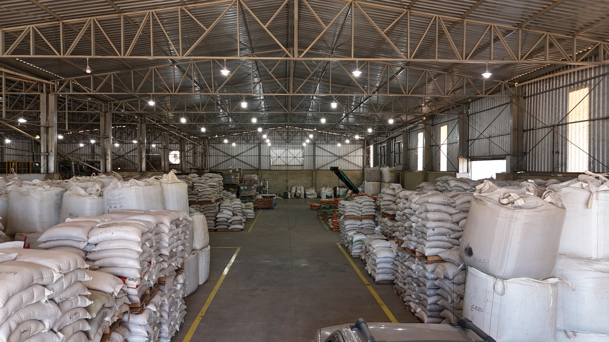
Controle direto de todas as etapas, da fábrica ao produto final.
Sementes produzidas com rigoroso controle de pureza e germinação.
Processos modernos que garantem eficiência e padronização.
Infraestrutura completa para produzir e entregar sempre o melhor.
Frota própria e parceiros estratégicos para todo o Brasil.
Equipe especializada para orientar produtores e revendedores.
Mais de uma década de crescimento, investimento e compromisso com o agronegócio — da fundação da Sementes Pacheco à nova marca SP Agro.
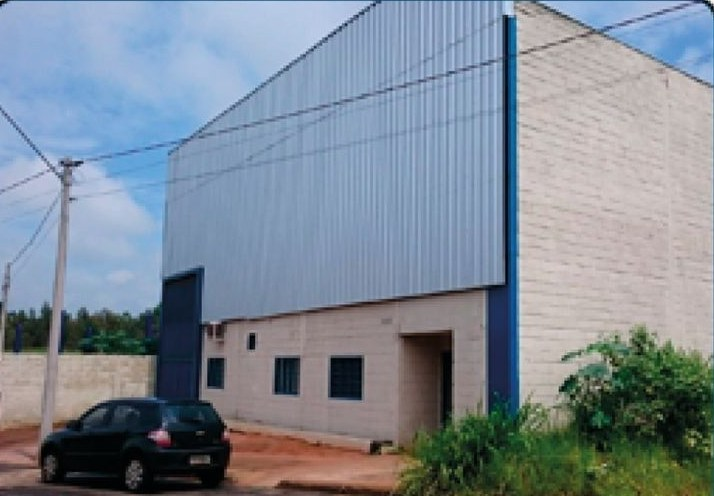
Início das atividades de beneficiamento e comercialização de sementes forrageiras, estabelecendo as bases da empresa e de sua atuação no mercado.
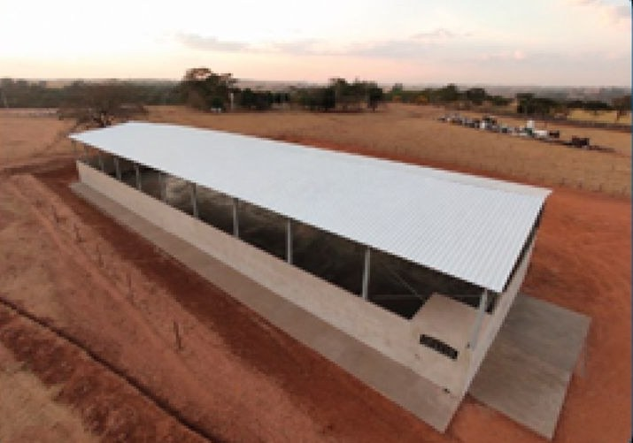
Mudança da operação industrial para uma estrutura maior, preparada para ampliar a capacidade produtiva e sustentar a expansão da empresa.
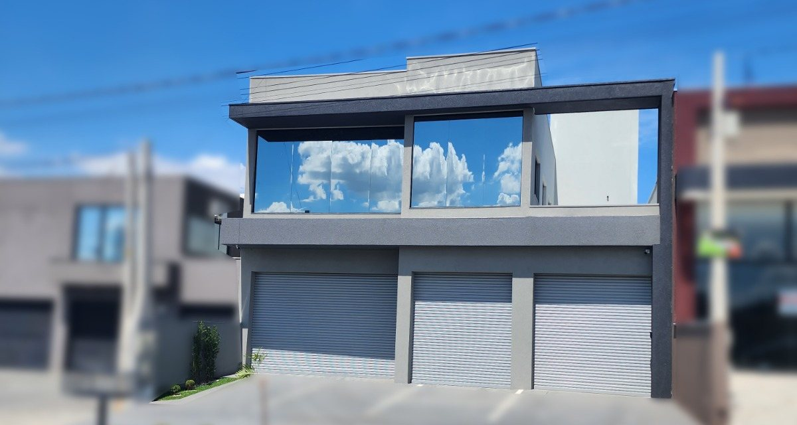
Inauguração de uma nova sede para fortalecer a gestão, aprimorar a organização interna e oferecer maior suporte às operações da empresa.
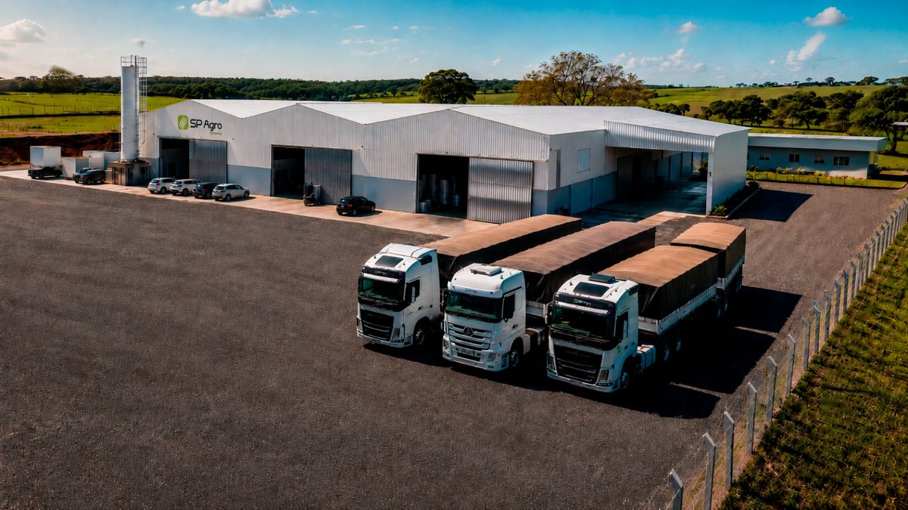
Investimento na expansão da unidade industrial, com a construção de 4.000 m² de novas instalações, fortalecendo a capacidade operacional e a infraestrutura produtiva.
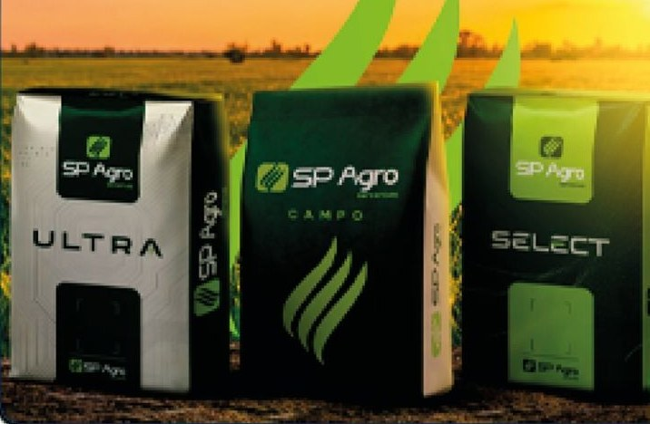
Início de uma nova fase da empresa, com a adoção da marca SP Agro, renovação das embalagens e fortalecimento da identidade institucional.
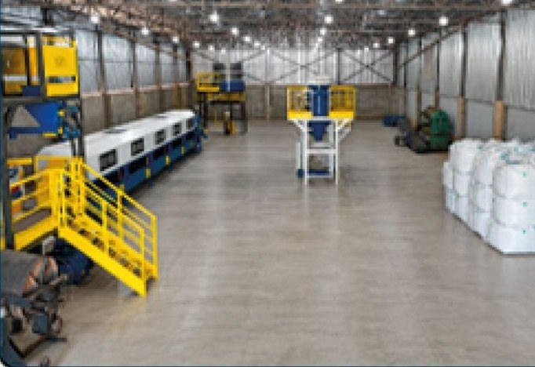
Investimento em uma nova estrutura industrial, com tecnologia para o revestimento próprio de sementes, modernização dos processos e maior eficiência operacional.
A SP Agro Sementes nasceu do trabalho, da coragem empreendedora e da confiança no potencial do produtor rural — crescendo com os pés no campo, ouvindo quem planta, maneja e depende de cada decisão para transformar terra em resultado.
Tradição, para nós, nunca foi sinônimo de ficar parado. Por isso investimos em processos, tecnologia, qualidade e orientação técnica que acompanham o ritmo do novo agronegócio — da indústria ao campo, da semente ao pasto formado.
Acreditamos que uma pastagem bem formada muda uma propriedade: aumenta produtividade, reduz desperdícios, protege investimentos e abre caminho para uma pecuária mais forte, competitiva e sustentável.
Sim. A SP Agro atende produtores rurais e revendas agropecuárias. A cotação é feita por WhatsApp, telefone ou pelo formulário de contato do site, informando a quantidade em hectares ou em quilos e a região de entrega.
Semente em palha é a semente pura, sem tratamento nem revestimento — é a Linha Campo. A semente tratada e revestida recebe uma camada que padroniza tamanho e peso, o que melhora a distribuição na semeadura e protege a semente no início do estabelecimento — são as linhas Select e Ultra.
Sete cultivares de forrageiras tropicais: Marandu, Mombaça, Xaraés, Piatã, Ruziziensis, Decumbens e Massai. Cada uma tem ficha técnica completa com fertilidade de solo indicada, produção de matéria seca, tempo de formação, altura de manejo e proteína bruta.
Fabricação própria. O beneficiamento, o tratamento e o revestimento acontecem na unidade industrial de Neves Paulista, no interior de São Paulo, com 30.000 m² de área e capacidade de 1.200 toneladas por ano, sob controle de qualidade em cada etapa.
Sim. A empresa mantém logística própria, com frota de caminhões para coleta e entrega de sementes a partir da fábrica em São Paulo, além de atendimento técnico consultivo ao produtor.
A escolha depende da fertilidade do solo, do regime de chuva, do sistema de pastejo e do objetivo da área. Marandu e Piatã são as mais usadas em pasto de corte; Mombaça e Xaraés entregam mais massa em solo de média a alta fertilidade; Decumbens é a mais rústica para solo de baixa fertilidade; Ruziziensis é a escolha comum em integração lavoura-pecuária. A equipe técnica da SP Agro orienta essa decisão antes da compra.